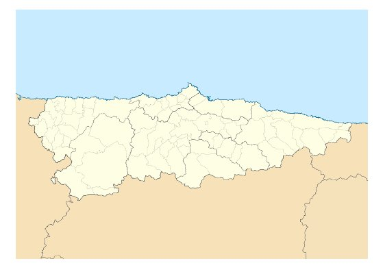
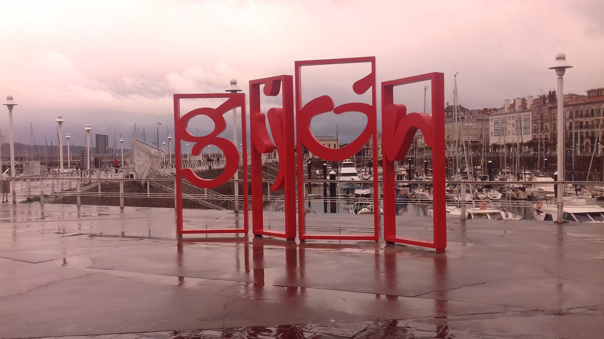

Gijón(en asturiano: Xixón) es una ciudad española, con la categoría histórica de villa, capital del concejo del mismo nombre. Está situada a orillas del mar Cantábrico en la costa del Principado de Asturias comunidad autónoma de la que es su municipio más poblado con 273 422 habitantes.
 Gijón es, además, una parroquia del concejo, cuya única entidad singular de población es la localidad homónima, y es conocida por antonomasia como la capital de la Costa Verde. Por la ciudad discurre el Camino de Santiago en su ruta costera, declarado Patrimonio de la Humanidad por la UNESCO
| Barrios | Centro | Centro, Cimadevilla y Laviada | ||
|---|---|---|---|---|
| Este | La Arena, El Bibio, Las Mestas, Viesques, El Coto y Ceares | |||
| Llano | Llano | |||
| Sur | Pumarín, Montevil, Contrueces, Poligono de Pumarín, Perchera-La Braña, Nuevo Gijón, Santa Bárbara y Roces | |||
| Oeste | La Calzada, Jove, Tremañes, Natahoyo, Moreda y Veriña | |||
| Zona Rural |
Parroquia | Población | Parroquia | |
| Baldornón | 182 | 740 | La Pedrera | |
| Cabueñes | 1423 | 211 | Poago | |
| Caldones | 424 | 680 | Porceyo | |
| Castiello de Bernueces | 1075 | 124 | Ruedes | |
| Cenero | 1432 | 266 | Santurio | |
| Deva | 695 | 290 | Serín | |
| Fano | 213 | 165 | San Andrés | |
| Fresno | 592 | 3508 | Vega | |
| Granda | 669 | 541 | Veriña | |
| Huerces | 323 | 359 | Lavandera | |
| Leorio | 418 | |||
| Gijón | 260 944 | |||
Geográficamente se localiza en la zona central-septentrional de Asturias, a 28 km de Oviedo y 26 km de Avilés, formando parte de una gran área metropolitana que abarca veinte concejos del centro de la región, vertebrada con una densa red de carreteras, autopistas y ferrocarriles y con una población de 835.053 habitantes en 2011, que la convierten en la séptima de España. A escala nacional se sitúa en la parte central de la cornisa cantábrica y a nivel europeo en la zona sur del Arco Atlántico.
Desde su fundaciónen el siglo V a. C. hasta fechas recientes, había sido una población eminentemente industrial, lo que favoreció su gran desarrollo y crecimiento durante el siglo XX. No obstante, durante los último años la crisis de la siderurgia y el sector naval ha supuesto la reconversión de su tejido productivo, lo que ha transformado la ciudad en un importante centro trístico, universitario, comercial y de I+D+i.
En el concejo tienen su sede el Consejo Consultivo del Principado de Asturias, la Radiotelevisión del Principado de Asturias y el Centro de Seguridad Maritima Integral de Salvamento maritimo.
El origen del nombre de Gijón suscita desde hace tiempo un intenso debate entre los estudiosos. En fecha tan temprana como 1899, Miguel de Unamuno emitió ya su opinión, según la cual la palabra provencría del latin saxum 'peñasco'. lo cual tendría relación con las caractérísticas geográficas del emplazamiento de la ciudad, cuyo núcleo primitivo se asentó en el gran promontorio que hoy se denomina Cerro de Santa Catalina y en el que se ubica el casco histórico de Cimadevilla. Otras interpretaciones de la época buscan el origen del término en voces celtas como:
Basándose en el primitivo carácter de Gijón como asentamiento militar, Sanchez propone la palabra sessio, que aparece en expresiones como sessio legionis o in sessione legionun, teoría que reforzaría la presencia de una 'aras sestianas' o 'aras sessianas' que algunos autores sitúan en la Campa Torres y Sánchez interpreta como 'áras de la session' o 'aras sessianas' por Ptolomeo, en realidad no tendría nada que ver con la urbe asturiana sino que correspondería a una población situada en lo que hoy es territorio leonés, quizá prósima al rio Cea
En Gijón se sitúan centros docentes de dos universidades, la Universidad de Oviedo y la Universidad Nacional de Educación a Distancia.
El campus de Gijón de la Universidad de Oviedo, que se ubica en las parroquias de Somió, Cabueñes y Bernueces, sobre fincas de la antigua Universidad Laboral de Gijón, incluye los siguientes centros docentes:
Gijón cuenta también con la delegación de la UNED en Asturias, donde se pueden cursar a distancia distitntas disciplinas.
El Camino de Santiago del Norte (ó Camino de la Costa) tras abandonar el concejo de Villaviciosa discurre a lo largo de 19 km por el de Gijón/Xión, hasta el limite con Carreño. En el km 3 se encuentra el actual de peregrinos (servicio que ofrece el Camping de Deva). A partir de este lugar, la ruta oficial transcurre por las parroquias de Cabueñes y Somio hasta el río Piles, donde se le une la ruta alternativa de la Senda de Peñafrancia, que habremos podido tomar al poco de salir del Camping de Deva. Atravesada la ciudad durante 7km, el Camino continúa por Veriña y asciende hasta monte Areo, entrando en el Concejo de Carreño. En 2018 comenzará a ofrecer sus servicios al peregrino el nuevo albergue, instalado en el placete Casa Paquet, en pleno dentro de la ciudad (Muelle deportivo).